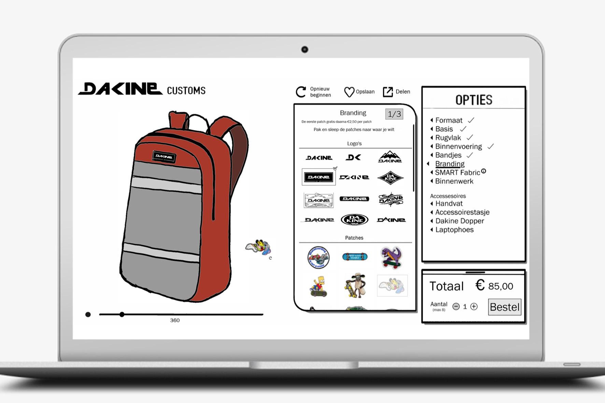

-
HCI
SketchBook
2 weken
Een van de eerste ontwerpopdrachten kreeg ik tijdens het vak HCI (Human Computer Interaction). Maak een webpagina ontwerp voor het rugzakken merk Dakine.
Specifieker ontwerpen waarin een gebruiker hun eigen rugzak kan samenstellen. Een pad dat de gebruiker aflegt langs het kiezen van de kleur van de tas, binnen en buitenkant, stickers voor op de tas en extra producten die besteld kunnen worden.
Tijdens het proces ben ik bezig geweest met het programma SketchBook, ik had hier nog geen kennis gemaakt met Illustrator of een ander Adobe programma (nu ik dat wel heb gedaan wil ik nooit meer terug!). Het proces duurde extra lang omdat dit een programma is wat niet gemaakt is voor volledige ontwerpen te maken. Het eindresultaat laat zien dat ook met een minder programma je een prima ontwerp kan maken.
Scherm voor scherm ging ik door het stappenplan van een rugzak samenstellen. Een paar schermen na het begin zat ik steeds meer in een zone. Bij iedere beslissing zat een argument waarom dat de beste optie was. Welke feedback geef je op welk moment aan de gebruiker. Op welke manier laat je de gebruiker weten in welk deel van het proces zit. Welke knoppen maak je meer keuze en welke niet. Allemaal vragen die ik me tijdens het ontwerpen afvroeg en vrijwel meteen kon beantwoorden met een argument.
- 
De andere eis van de opdracht was dat je van je ontwerpen een screenflow moest maken. Een soort schema waar je de kijker/lezer meeneemt door alle aspecten van het ontwerp. Je legt hier uit wat bepaalde functies toevoegen aan het ontwerp en je beargumenteerd de meest opvallende keuzes. Ook kom je achter het pad dat je aflegt als niet alles goed gaat. Denk aan gegevens vergeten in te vullen en vervolgens een foutmelding krijgen. Hiermee hebben we ook de UI-stack behandeld, de ideal, error, empty, loading en partial states. Als een soort niet interactief prototype kan je erachter komen hoe het stappenplan in elkaar zit.
Een van de dingen waar ik het meest van heb geleerd tijdens dit project is het denken vanuit de gebruiker. Wat wil de gebruiker hier zien als ze geklikt hebben op een knop. Niet alleen beslissingen maken die er mooi uitzien maar echt praktische keuzes maken om de ervaring van de gebruiker zo fijn mogelijk te maken. Het heeft mij veel inzicht gegeven in hoe je als ontwerper jezelf echt goed moet inleven in de gebruiker.
Vind het eindontwerp/screenflow hier om in detail alles te kunnen zien.